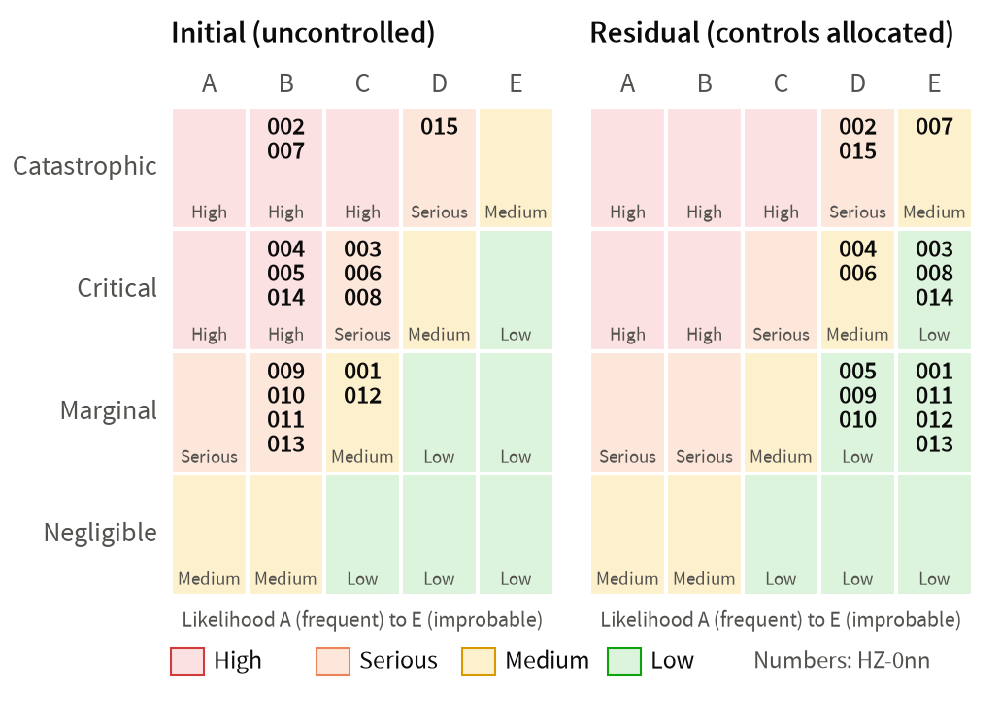
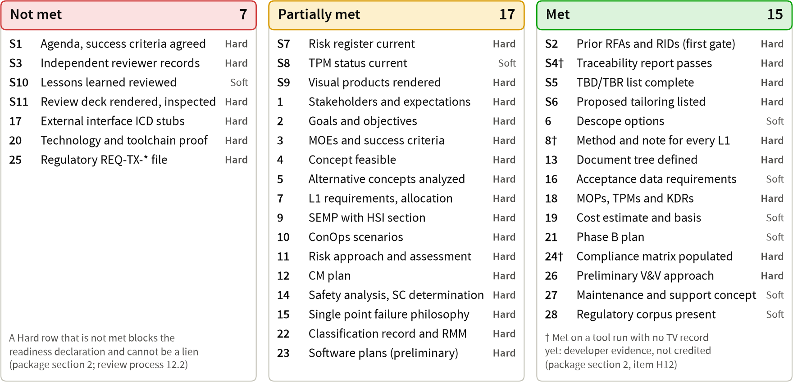
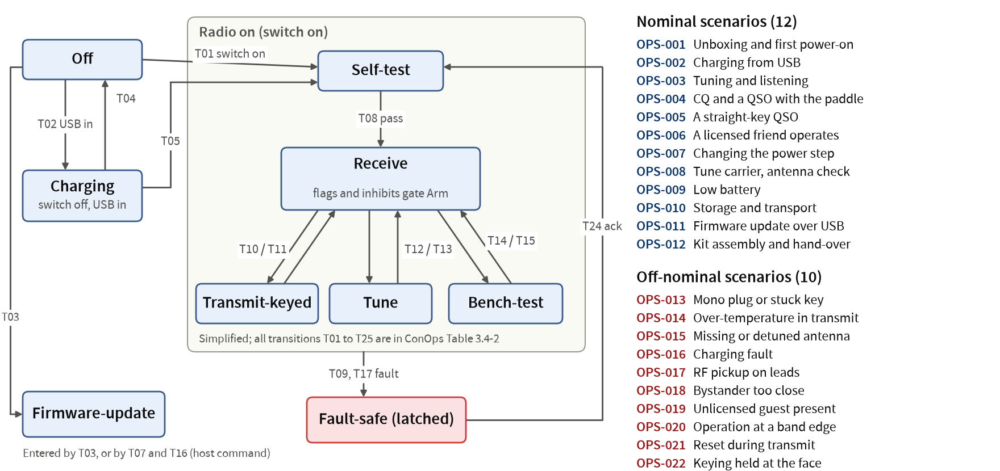
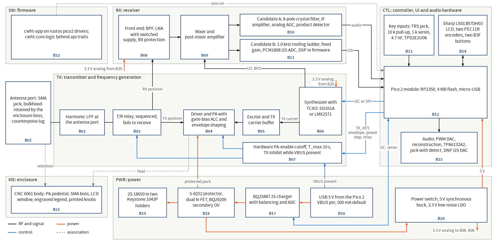
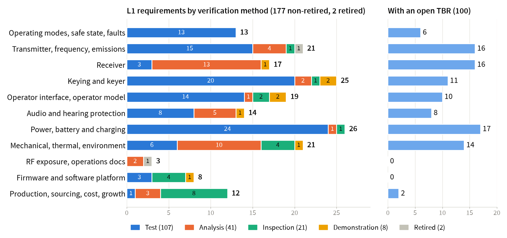
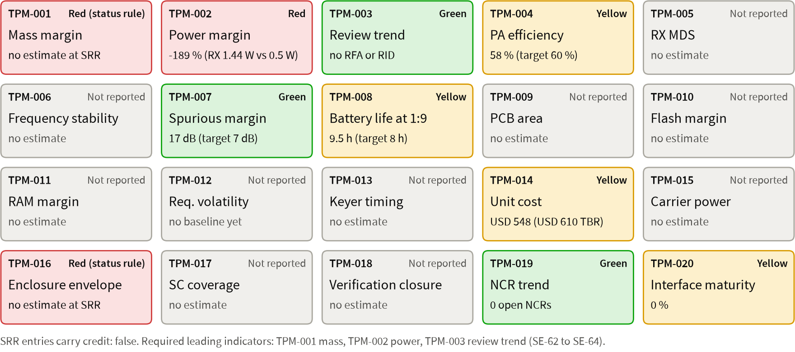
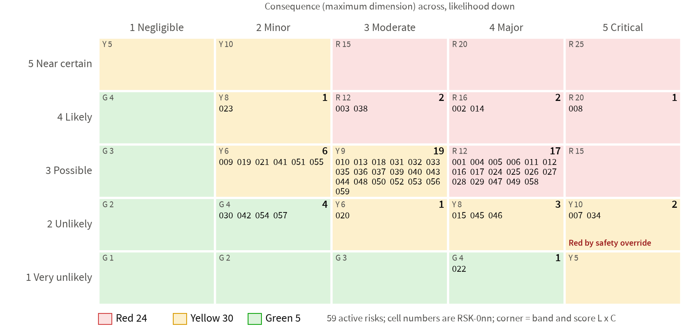

Pocket 2 m true-CW (A1A) 5 W handheld transceiver, 144.000 to 148.000 MHz
Package docs/reviews/SRR/package.md, revision 8 final of 2026-09-26, read from the 30 records at HEAD a6e3518, where every cited product and record is committed. Revision 8 is at 27cc9d9; revision 7 at 8d7eca7.
Chair, Decision Authority, ETA and SMA TA: Robin. Presenter: Claude (lead systems engineer).
Pre-review session: the SRR gate review is not convened. The readiness declaration cannot be made: Hard rows S3 and 20 are Not met, S1 awaits your confirmation, and 10 Hard rows are Partially met (package section 4, revision 8 final).
The minutes record this session as a pre-review session, not as the gate review.
| Block | Package | Slides | Chair decision needed |
|---|---|---|---|
Opening action: FW-B0 flash and picotool verify (OA-1, OA-2) | §2.2 | 3 | Perform with Claude |
Purpose, readiness, review records, entrance checklist | §1 to §4 | 4 to 9 | Confirm the agenda (S1) |
Products, concept, requirements, traceability | §6 to §8 | 10 to 15 | Questions, RIDs, RFAs |
Hazards, TPMs, risks, milestones | §9 to §12 | 16 to 19 | Questions, RIDs, RFAs |
TBRs, key decisions K1 to K17, consent agenda | §13 | 20 to 35 | Rule K1 to K17; adopt the consent agenda |
Trend, candidate RIDs, software, tailoring, success criteria | §14 to §20 | 36 to 39 | Adopt candidate RIDs; approve tailoring |
Liens, owner actions, requested disposition | §20.1, §2.2, §21 | 40 to 42 | Note; no disposition this session |
The hands-on part of entrance row 20; Claude runs every command and files the report.
Write 1 on the bare Pico 2; hold BOOTSEL, plug it into the Mac, release BOOTSEL and tell Claude
Claude runs picotool info -d, picotool load -v of rustos-blinky.uf2 and picotool reboot; you count LED turn-ons for 60 s: pass 10 to 120 (about 63 expected)
Re-enter BOOTSEL; Claude loads cwht-app.uf2 the same way; count for 60 s: pass 3 to 45 (about 16 expected)
OA-2: with the board still in BOOTSEL, Claude loads kat-target.elf and runs picotool verify (expect pass), then a copy with one byte changed (expect fail)
Claude files run 3 of TC-SW-TOOL-001 (run 2 is Blocked; its UF2 images are byte-identical to run 1)
Purpose: confirm the requirements respond to your NGOs, MOEs and ConOps and can be achieved, the concept is feasible, and the plans suffice to begin preliminary design
Scope: SRR absorbs the MCR; your disposition at the gate review is followed by the tag baseline/srr (§21)
Readiness: not declarable at revision 8 final; the goal state, in which only your items remain, is not yet reached: item R20, the deck route of R15b-F1
Tools: at a6e3518 every gate tool exits 0: validate_docs.py 49 passed, 400 of 400 tool tests; developer evidence until accreditation (K15)
This session: rulings on K1 to K17 and the consent agenda, owner actions, adoption of candidate RIDs
At the gate review: Approved, Approved with liens or Not approved; never a lien: an unmet Hard row or an open Major RID
Package revision 8 final. None of the 17 may be a lien (review process 12.2). "Closed" means the evidence exists at a named commit and no open Major finding stands against it.
| Group | Items (package section 2.1) | Owner | State |
|---|---|---|---|
Your rulings | R1: K1, K2, K7, K9 to K12, K14 to K17 and the rest of section 13.1 | Robin | Open |
Your hands-on | R2: FW-B0 steps 11 and 12 and the picotool verify (OA-1, OA-2) | Robin; Claude runs commands | Open |
This deck | R20: the deck route of readiness finding R15b-F1 (Major): this update, then the INSP-029 delta pass | Claude (lead SE); reviewer | Open |
After the rulings | R16: installs, gate to exit 0, run 3, INSP-016 iteration 4; requirement, ConOps and ADR edits | Claude; reviewers | Waits on R1, R2 |
Done | R3 to R14; R15 repeat on revision 8; R17 INSP-008; R18 record state rule, INSP-002, INSP-015; R19 (a) deck; R19 (b) INSP-030, INSP-029 | Done |
Record numbers are INSP-NNN. No APPROVED record fails a gate tool. Every Minor finding of every record is dispositioned "Lien: fix before PDR": 123 findings plus erratum E-10 (package revision 8 final), carried as lien L-6.
| Record | Open Major finding | Closes on | Key decision |
|---|---|---|---|
INSP-003 | finding-6: ten | Decision 30 | K12 |
INSP-011 | F-01: class 1 choices recorded by an ADR without a trade study | Decision 106 (R-2) | K11 |
INSP-011 | F-04: Accepted ADR-010 decides hang values that the requirements contradict | Decision 47 (ADR-026) | K16 |
INSP-016 | finding-1: FW-B0 gate exits 1 at run 2 (2 FAIL, 5 MISSING) | Decisions 109, 110; OA-1; R16 | K9, K10 |
INSP-016 | finding-2: target-only decision without an approved deviation | Decision 108 (CR-001) | K10 |
Blob check at a6e3518 (revision 8 final): 30 of 30 records (195 entries) name exactly the committed blobs; H17 Closed; item 57 (Major) stays Closed
The INSP-029 drift closed with its re-issue; this deck update re-opens it until the INSP-029 delta pass (R20)

| Product and path | Counts | Record |
|---|---|---|
Expectations (SE-35, SE-37) | 36 SI, 10 stakeholders, 30 NGO, 13 MOE, 28 CON | INSP-001 APPROVED |
ConOps and concept (SE-36) | 9 modes, 22 scenarios, B01 to B22, 10 descopes | INSP-002 APPROVED |
L1 (SE-39) | 183 REQ-SYS (181 Draft, 2 retired), 18 KDR, 115 TBR | INSP-003: 1 open Major |
L2 and cases | 16 REQ-TX, 39 REQ-SW-KEYER; 170 cases | INSP-004, 025, 026 APPROVED |
Hazards, risks | 15 hazards, 118 controls; 65 risks (Red 32) | INSP-008, INSP-007 APPROVED |
SEMP (SE-38, SE-66), plans 01 to 08, RMM, matrix | 100 RMM rows; 62 compliance rows | All APPROVED, with INSP-030 |
ADRs, trade studies, ICD stubs | 26 ADRs (4 Proposed); TS-001, TS-002; 5 stubs | INSP-011: 2 open Major; INSP-012 APPROVED |
TPMs, tools, cost | 20 MOPs, 20 TPMs; TV-001 to 013; USD 276 to 548 per unit | INSP-015 APPROVED; INSP-016: 2 open Major |


No technology below TRL 6; design maturity tracked apart as DML (SEMP section 6.0); INSP-014 F-02 Closed at 4fe6f28
TS-001: single-conversion superhet; selectivity A and B a closely ranked pair, A the planning baseline; PA P1, then P3, P4
TS-002 (SWE-033): rustos, option A0, 400 of 500, robust against three alternatives
INSP-013 APPROVED both on the committed blobs, paired with INSP-027, the TS-002 assurance; re-issued at fdd3391
Ten descope options ordered by value lost (row 6 Met); six PDR trade studies defined in the concept
No RF breadboard before procurement: hardware TRL 3, a residual of RSK-008 (decision 11, K4)

Report re-run 2026-09-26 at b4abcc5, byte-identical: PASS, 0 violations, 3 warnings; 238 requirements, 170 cases, all Draft
Warnings: T-18 REQ-SYS-125, 148 unallocated; HAZARD_INVERSE REQ-SW-KEYER-039 (lien)
Cases: TC-SYS 110, TC-TX 16, TC-SW-KEYER 43, TC-SW-TOOL 1; Bench 96, HostUnit 35, Simulation 27, Inspection 12
Every non-retired requirement has a case; allocation.json allocates 179 ids; T-21 stakeholders passes
INSP-003 finding-6 (Major): ten regulatory requirements not verified by Test (decision 30, K12)
SWE-052 Table 1: rows 1, 5, 6 enforced, row 2 in part, rows 3, 4 not yet; 22 KDRs (18 L1, 4 L2)

15 hazards: initial High 5, Serious 8, Medium 2; residual Low 10, Medium 3, Serious 2
118 controls; every control case is Draft
19 questions due at SRR: 9 Closed, 1 Answered, 9 Open; 8 close on your rulings
Safety-critical: keying, PA enable, safe state, charging, thermal, audio, scheduler
Proposed: frequency control and the override path (decision 9)
SPF rows 3, 4, 8: REQ-SYS-180, 182, 181 (K2)


| Milestone | Planned | Status | Recovery |
|---|---|---|---|
SRR package ready | 2026-09-26 morning | Revision 8 final assembled; not ready (section 2.1) | R20 deck route; this session for rulings and OA-1 |
PDR | 2026-09-26 evening | Pending; SRR not yet held | Six trade studies, L2 specifications, ICDs, V&V plan |
CDR and procurement release | 2026-09-27 evening and night | Pending; RSK-014 Red | Lien rule of RSK-014 S2 |
Vendor delivery, TRR | 2 to 4 weeks after the order | Pending; RSK-053 closure 2026-10-01 to 10-04 | Alternates in the BOM at CDR |
Procurement: no BOM line exists; the PCBWay questions are drafted and not sent (OA-4)
Zero DigiKey and Mouser stock seen on 2026-09-25 for TPS62913, TPS7A2033, BQ25792 (RSK-038, Red)
| TBR set | Count | Closure |
|---|---|---|
L1 requirement TBRs | 115 | 14 in the SRR memo by your rulings; 101 at PDR |
L2 TBRs (REQ-TX, REQ-SW-KEYER) | 25 | PDR |
TPM TBRs | 5 | TPM-014 at SRR (decision 90); four at PDR |
Hazard-control TBRs | 17 | PDR analyses |
118 numbered decisions: 17 key decisions covering 52, ruled one or two per slide (slides 21 to 32)
Consent agenda of 64 in themes A to P: adopt as a block, for example "except decisions 22 and 97" (slides 33 to 35)
2 need no ruling (5 withdrawn, 12 done); an unanswered item keeps the assumption the package states
Revision 6 re-checked every consent row (tests T1 to T3): 42 to K1, 73 and 74 to K7; revision 5 moved 25 to K12 and added 118 to K17
Why key: safety (HZ-001, HZ-004, HZ-006); 37 differs from REQ-SYS-054 as written; 41 closes OQ-SAF-016, a Hard H7 question; 42 conflicts with 41 and 37 (test T1).
| No. | Decision and options | Recommendation | If no answer |
|---|---|---|---|
36 | Tune and cutoff window: (a) tune at 0.5 W ending 5 s +/-0.5 s, cutoff T_max 10 s (7.5 to 13 s); (b) 10 s tune, cutoff window above 11 s | (a), with the 74LVC1G123 and a capacitor chosen from its DC-bias curve | (a), as REQ-SYS-020 is written |
37 | Stuck-key limits: 5 s manual timeout; paddle watchdog 128 or 10 s, 128 or 30 s, or the no-gap form (no 7-dit or 500 ms gap for 30 s, 2 s squeeze) | 5 s including the Bug dah; the no-gap watchdog with the 2 s squeeze limit | REQ-SYS-053, 054 as written; OQ-SAF-001, 002 stay open as RIDs |
41 | Bench test-mode guard: forced 0.5 W, 120 s timeout, exit on reset, not persistent | Adopt | REQ-SYS-179 without the forced step and timeout |
42 | ConOps 3.4 mode classes, PRACTICE flag, bench-test limits (60 s per keyed activation): (a) classes and flag; limits as 41 and 37 rule; (b) 60 s, 41 at 60 s; (c) limits to PDR | (a), ruled after 37 and 41 | 60 s and the REQ-SYS-054 values; conflict with 41 open |
Why key: each backstop removes a single point failure and adds hardware; the concurrence of decision 9 and the determination of decision 33 are yours as SMA TA.
| No. | Decision and options | Recommendation | If no answer |
|---|---|---|---|
38 | Adopt REQ-SYS-180: hardware ends RF at 150 to 180 s of continuous transmit | Adopt, 150 to 180 s | Retired; HZ-004 stays Serious; SPF row 3 open |
39 | Adopt REQ-SYS-181: RF ends within 100 ms above 95 C +/-3 C heat-sink temperature | Adopt, 95 C and 100 ms | Retired; firmware inhibit only; SPF row 8 open |
40 | Adopt REQ-SYS-182 with REQ-TX-013: no RF unless an independent count agrees within 10 kHz | Adopt, 10 kHz and 100 ms | Both retired; RSK-046 keeps SPF row 4 |
9 | Concur with Class A and the safety-critical set; frequency control and the override path safety-critical? | Concur, both safety-critical | Frequency control stays mission-critical |
33 | Key-down accumulator and posture line: a convenience function, not safety-critical | Convenience function | Convenience function |
Why key: signed in capacities only you hold (ETA, SMA TA, HMTA, CIO/SAISO designee, risk taker); K15 turns the tool runs into credited evidence.
| No. | Decision and options | Recommendation | If no answer |
|---|---|---|---|
6 | Approve | Approve both; RSK-010 carries the residual | RMM Draft; no approved SWE-219 method, which blocks CDR |
7 | Cybersecurity relief (SWE-154, 156, 157, 159, 210); add HMTA and CIO/SAISO designee roles | Approve both | Rows proposed; the 03 record cannot be signed |
8 | As HMTA and risk taker, accept the human safety risk of the SWE-022, 023, 219 tailoring | Accept, with RSK-010 and the hazard analysis | Not accepted; three T rows stay proposed |
114 | Accredit TV-001 to TV-010 (INSP-015 APPROVED with liens F-07 to F-09) | Accredit each as proposed | Developer evidence; S4, 8, 24 keep the dagger |
Why key: risk-taker capacity: 32 Red mitigation plans, hardware TRL 3 at procurement, SAR by analogy, no independent human technical authority.
| No. | Decision and options | Recommendation | If no answer |
|---|---|---|---|
14 | Approve the 32 Red mitigation plans of register 0.6.0-pre-srr; keep RSK-009 open to PDR | Approve all 32 | No plan approval; the PDR risk check rejects them |
11 | Accept hardware TRL 3 at procurement release (no RF breadboard) as a residual of RSK-008 | Accept now; reconfirm at CDR | RSK-008 stays Mitigate; asked again at CDR |
32 | Accept SAR by analogy (0.35 W/kg per W, 1 g, 50 % duty); commission an FDTD estimate or not | Accept; no FDTD in revision A | Analogy accepted; asked again at PDR |
3 | Accept assessment by reviewer agents only, or name an external reviewer for a gate | Accept, as SEMP section 4.1 | Accepted as stated |
Why key: Part 97 control-operator responsibility and HZ-006 (bystander and guest exposure); ADR-015 disposition; option b of 19 is a real alternative.
| No. | Decision and options | Recommendation | If no answer |
|---|---|---|---|
17 | Operator model: OPS-A (own station, own call), OPS-B (your station, friends as control operators) or both | OPS-A default, OPS-B only by a dated record; accept ADR-015 | OPS-A; ADR-015 Proposed; RSK-028 S2 open |
18 | OPS-B exposure tier: occupational basis, or 0.5 W and 1 W steps only | Keep OPS-B at 1 W or below until a dated record | OPS-B at 0.5 W and 1 W |
19 | Receive-only guest lock; release (a) two-step or (b) a licensee credential | Include, option a | Option a |
20 | Guest keying under a present control operator at 0.5 W and 1 W, or listen only | Allow, restricted | Allowed; HZ-006 stays Critical-D Medium |
Why key: HZ-005 (initial High) sets three audio policies apart; the cost ceiling closes the TPM-014 TBR at SRR; build quantity drives the CDR order.
| No. | Decision and options | Recommendation | If no answer |
|---|---|---|---|
63 | Headphones only, or a speaker with a class-D amplifier and a second acoustic analysis | Headphones only | Headphones only |
64 | Audio: (a) 100 mVrms hardware ceiling, 150 mVrms any pattern, 30 mVrms default cap, 20 h unlock; (b) 150 mVrms ceiling; (c) hardware ceiling only | (a) | (a) as written |
90 | Unit cost ceiling USD 610 (TBR) over three units; cost model about USD 276 to 548 per unit | USD 610; instruments outside the budget | USD 610 (TBR); TPM-014 Yellow |
86 | Build quantity: five boards fabricated, three to five assembled, count fixed at CDR (47 CFR 15.23) | Five fabricated; three assembled as planning value | Three assembled, five fabricated |
Why key: Catastrophic HZ-002, HZ-007; HZ-011 (charging while transmitting); fixes the PDR power tree; 73, 74 are HZ-007 pending decisions.
| No. | Decision and options | Recommendation | If no answer |
|---|---|---|---|
70 | Charger IC: BQ25887, MP2672A or BQ25792 | BQ25887 | BQ25887 as PDR baseline |
72 | Protection: S-8252 with dual N-FET plus BQ29209, S-82C2B with sense resistor, or protected cells | S-8252 plus BQ29209; add the 4.30 V and Kelvin requirements | As recommended; OQ-SAF-008, 009 open |
73 | Cell holders: two Keystone 1043P, one dual holder, or an owner-installed sled | Two 1043P | Two 1043P |
74 | 5 V bus: synchronous buck with SYNC; mechanical switch on buck enable and PA rail, or soft power | Buck with SYNC; mechanical switch | As recommended |
75 | While charging: receive with charge paused and hardware TX inhibit, both concurrent, or no operation | Receive, charge paused, TX inhibited; by ADR | As recommended |
76 | 6 h at 1:4; 3.20 V per cell TX inhibit, 3.00 V per cell power-down, 60 C cell power-down (TBR) | Adopt | Adopted as TBR |
85 | Environment: operate -10 to +45 C, charge 0 to 45 C, store -20 to +60 C, 1.0 m drop, IPX2 | Adopt (TBR); RSK-059 carries the lack of qualification testing | Adopted as TBR |
Why key: TS-001 section 8.4 replaces the revision 2 PA fallback; filter candidate A costs about USD 118 per unit against USD 2 to 5 for B.
| No. | Decision and options | Recommendation | If no answer |
|---|---|---|---|
53 | Receiver family: single-conversion superhet, transverter to 28 MHz, direct conversion, commercial transverter | Superhet | Superhet confirmed |
54 | Carry A (Inrad 8-pole crystal filter, analog AGC) and B (1.0 kHz roofing ladder, I2S ADC, DSP) as a pair | Both, A the planning baseline; A hangs on the Inrad quote | Both without a baseline; TBR |
55 | Front end: low-noise MMIC about 97 mA (0.5 dB NF), or a stage of about 30 mA (2 to 3 dB NF) | About 30 mA: 7 dB system NF meets REQ-SYS-022 | Scored again at PDR |
58 | PA: P1 PD54008L-E; fallback P3 then P4 on a 12.5 V rail instead of GRF5604 | As TS-001 8.4; GRF5604 fails the REQ-SYS-112 screen | GRF5604 fallback stands |
Why key: SWE-033 make/buy (H14) and your capacity as rustos maintainer; row 20 and INSP-016 finding-1 and finding-2 (Major) close only on these approvals.
| No. | Decision and options | Recommendation | If no answer |
|---|---|---|---|
107 | Runtime: A0 rustos (400 of 500) against rp235x-hal, Embassy, RTIC (265, 220, 220); ADR-027 follows | Approve A0 with the four revisit triggers | H14 stays open; FW-B0 cannot close |
110 | rustos licence; manifest item ( | MIT, as cwht; approve the manifest item | rustos unlicensed; G5 fails; row 20 Not met |
108 | CR-001: amend CS-11, CS-38 for driver-construction arms; CS-12 for the panic handler | Approve | INSP-016 finding-2 open; row 20 Not met |
109 | Downloads: rustc 1.98.0 and nightly-2026-08-24 toolchains, rust-code-analysis-cli, RustSec database | Approve the four; optional crates not needed | G5, G6 MISSING; gate cannot exit 0 |
Why key: INSP-011 F-02, F-03 are Closed on the R-1 correction (a reversal re-opens them); F-01 (Major) closes only on 106, F-04 (Major) only on 47.
| No. | Decision and options | Recommendation | If no answer |
|---|---|---|---|
105 | R-1, correct the 21 Accepted ADRs: (A) fold the register into the files before the baseline; (B) register as a supplement; (C) 19 superseding ADRs | (A), applied by the lead SE for your approval or reversal | (B), as the register states |
106 | R-2, record class 1 choices by an ADR alone: (i) your SI choices, (ii) values you dispose of | Adopt (i) and (ii) | Each (i) ADR needs a trade study or waiver; F-01 open |
111 | ADR-024 identification-memory clause against REQ-SYS-007 | Constrains a future memory only | The register row stands |
47 | Hang 8 dits (3 to 30, TBR), lead-in at most 12 ms; accept ADR-026, superseding ADR-010 | Adopt; accept ADR-026 | F-04 open; row 5 Partially met; declaration blocked |
Why key: 02 section 4.4 requires Test for regulatory requirements unless you decide a class 1 trade; INSP-003 finding-6 (Major) closes only on decision 30; decision 25 sets the band-edge guard (47 CFR 97.301(a), 97.307(b)).
| No. | Decision and options | Recommendation | If no answer |
|---|---|---|---|
30 | Item (g) record for ten | Accept all ten; 015 to Test by CR if the tinySA resolves it | Finding-6 open; rows 7, 8, 25 Partially met |
113 | CR to 04 rule 7.3.6: Inspection for documentary requirements (REQ-SYS-122, 124, 137, 138) | Approve; Claude writes the CR | Analysis stays; finding-17 a lien |
29 | 60 dB design target (limit 53 dB at 5 W, 47 CFR 97.307(e)); V-5: reference (a) PA output to antenna port or (b) filter terminals; 576 MHz to 1.5 GHz band (c) in ADR-022 or (d) not | Adopt; V-5 options a and c; accept ADR-022 | 60 dB TBR; ADR-022 Proposed; V-5 to PDR |
25 | Guard versus keying sidebands: 750 Hz (REQ-TX-006) + 370 Hz reference error = 1.12 kHz; a 1 kHz guard leaves 120 Hz out of band. (a) 1.2 kHz guard, +/-2.5 ppm; (b) 1 kHz, +/-1.6 ppm; (c) 26 dB-only edge claim; (d) 2 kHz, looser reference | (a); accept ADR-023 revised to 1.2 kHz | Nothing adopted; 1 kHz TBR; conflict open to PDR |
Why key: Hard row 25 and SWE-050; concurrence on self-derived safety requirements and any readiness waiver are yours alone; in K17 only 115 (b) still asks for a ruling.
| No. | Decision and options | Recommendation | If no answer |
|---|---|---|---|
104 | Close row 25 and H15 on the Draft L2 files; INSP-004 re-issued APPROVED at | Yes; option (b) lapses | Row 25 Partially met; declaration blocked |
112 | Concur with self-derived REQ-SW-KEYER-034, 035, 036, 038 and 039 | Concur with all five | The five retired before the baseline |
115 | (a) waive the author self-check of 16 records: all 16 filed (R7), no waiver needed; (b) waive INSP-016 readiness R3 (design unit Active) for FW-B0 | (a) done; (b) waive for FW-B0 only | (a) none needed; (b) row 20 cannot be Met at SRR |
118 | 05 assurance pairing (07 section 22): (a) paired record, done: INSP-030 at | (a), done; no ruling | (a) stands; nothing transcribed |
| Theme | Decisions | Adopting the block rules |
|---|---|---|
A Governance, plans, tailoring | 1, 2, 4, 10, 13, 15, 16 | Each plan approved as its record turns APPROVED with no open Major; HSI as SEMP 7.3.1; SE-51, 52, 55, 56 deviation; charter Log items; TRL and DML method; branch protection before |
B Operator model, limits, exposure | 21 to 24, 26 to 28, 31, 34, 35 | No automatic ID or memories; steps 0.5, 1, 2, 5 W +/-1 dB; 1 W default with a 5 W confirmation; 5.0 W +/-1 dB, 6.3 W ceiling; full band with presets; 208HA1A; REQ-SYS-014 envelope; posture P1; engraved legend; corpus gaps before PDR |
C Stuck-key and transmit safety | none | Empty since revision 6: decision 42 moved to K1 (test T1); the letter is kept |
| Theme | Decisions | Adopting the block rules |
|---|---|---|
D Keyer and key interface | 43 to 46, 48 to 52 | Five modes, Iambic A default; menu key-type selection; 15 WPM; 600 Hz sidetone; only switchpoint and debounce exposed; -5 to +12 V abuse, IEC level 4; keyer values ratified; marked jacks; 1 kHz polling |
E Receiver, frequency generation | 56, 57 | USD 15 band for "costs are similar"; TX owns frequency generation; 144.010 MHz start, +27 dBm survival with a limiter |
F Transmitter, T/R, PA | 59 to 62 | Gate-bias ALC from the pack; SWR fold-back decided at PDR; relay, LPF after the T/R node; transmit fault values ratified |
G Audio | 65 to 69 | PWM with a DNP I2S footprint; shutdown with indicator, keyer live; no dose accumulator; TPA6132A2; mute and fade values ratified |
H Power | 71 | 500 mA USB default, deviation accepted; decisions 73 and 74 moved to K7 (test T2) |
I Display, controls, HSI | 77 to 79 | LS013B7DH03, no light in build 1; PEC11R encoders, B3F buttons, SJ1-3535N jacks; interface values ratified |
| Theme | Decisions | Adopting the block rules |
|---|---|---|
J Antenna, enclosure | 80 to 84 | SMA jack; Signal Stick and range references with a radiated screen; SPLAT! before PDR; 6061 with Type II anodize; OpenSCAD 2021.01, H2C prints |
K Board, fabrication, cost | 87, 88, 89, 91 | 1.0 or 1.6 mm by the enclosure bosses, FR-4, Type VII vias; full turnkey, top-side SMT; owner bench functional test; early buys at PDR by ADR |
L Firmware platform, tools | 92 to 95 | ACC-EMU-001 by the PDR ADR; single-core design rules; pinned analysis tools installed; secure boot decided at PDR |
M Measures, allocations | 96, 97, 98 | Add MOE-013; 350 g and 140 x 70 x 40 mm as TBR; TPM-002 re-allocated at PDR |
N Owner purchases, mail | 99 to 102 | Instruments by PDR, tinySA by TRR; bench safety kit; vendor mail and bench checks by PDR |
O, P Added in revisions 2, 3 | 103, 116, 117 | Keep stakeholder name keys; hazard questions not re-dated; INSP-015 item set for SRR, TV checklist before PDR |
Prior trend: no prior review; the SRR log is empty; TPM-003 Green (0 raised, 0 open, 0 overdue).
| Handling | Section 15 items (revision 8 final) | Carried by |
|---|---|---|
Open Major, closes on a ruling (never a lien) | 27, 46, 52, 53 | K12; K11, K16; K9, K10 |
Major, Closed | 5, 9, 26, 28, 44, 50, 51, 57, 62, 63, 67 to 69, 72 to 75 | none (75 in revision 8 final) |
Major, carried by R items before the declaration | 61, 76 | R20: deck route of R15b-F1 |
Minor, Closed or applied | 1, 4, 6, 12 to 22, 24, 30 to 33, 35, 36, 39, 56, 59, 64, 65, 70; 77 applied | none (77 residual: L-4) |
Ruled by a decision | 7 and ConOps D5, D7, D18 of item 10 | K1 (36, 37) |
Minor, record liens | 23, 25, 29, 34, 37, 40 to 43, 45, 47 to 49, 54, 60 | L-6 |
Minor, package level | 2, 3, 8, 11, 38, 55, 58, 66, 71; Minor ConOps D items | L-4 (55, 66 in L-5) |
| SWE | Product | Status |
|---|---|---|
020, 176, 205 | Classification (Class A elected); safety-critical determination | Done: INSP-009, 017 APPROVED; decision 9 |
125, 139 | RMM, 100 rows (FC 75, T 17, NA 8) | Done; approval K3 (decision 6) |
013 | Software plans (07) with the security section | Done: INSP-010, 018 APPROVED |
033 | TS-002 make/buy | Pending: INSP-013, 027 APPROVED; decision 107 |
050 | SW-KEYER, 39 requirements | Content done: INSP-004, 026 APPROVED; decisions 104, 112 |
079, 081 | CM plan 05 and CI list | Done: INSP-006, INSP-030 APPROVED |
136 | Lock, TV-001 to TV-013 | Partial: INSP-015 APPROVED; accreditation K15 |
FW-B0 | TC-SW-TOOL-001-r2 | Blocked: gate exit 1, 2 FAIL, 5 MISSING; OA-1 |
| Rows | Proposed | Basis (abridged from the matrices) |
|---|---|---|
IV&V: SWE-141, 131, 178, 179 | NA | Not a Category 1 or 2 project; no IV&V facility; independence by separate agents |
Institutional: SWE-174, 032, 147, 148 | NA | Center repository, CMMI organization and NASA ownership do not exist |
Cost, schedule: SWE-015, 151, 016, 018, 046 | T | Hardware realization cost model; event-based milestones, no calendar |
Assurance, training: SWE-022, 023, 017 | T | NASA-STD-8739.8 not in the corpus; SWEHB tabs; briefs replace training |
Coverage: SWE-219, 211 | T | No Rust MC/DC tool (RSK-010); Rust core tested at feature level |
Cybersecurity: SWE-154, 156, 157, 159, 210 | T | No network interface; scoped to USB, SWD, configuration, key input |
Other: SWE-027, 143 | T | Licence review instead of IP counsel; architecture review within PDR |
NPR 7123.1D: SE-24 to 31, SE-44; SE-51, 52, 55, 56 | NA; T | No contracts; program-only row; ORR with SAR; DR and DRR not held |
Partially met: content exists and its record or a ruling is pending, or an open finding stands against it. Not met: content missing, or a shortfall touching safety, regulation, interfaces or traceability (review process 12.2). Approvals the gate itself grants are not counted as pending.
| Lien | Shortfall and closure plan | Owner | Due |
|---|---|---|---|
L-1 | 101 L1, 25 L2, 4 TPM and 17 hazard-control TBRs, each by its own plan; the 14 SRR TBRs and TPM-014 are ruled here | Robin decides; Claude | PDR (L2 by CDR at the latest) |
L-2 | S8: TPM-001, TPM-016 have no estimate; bottom-up estimates in | Claude | PDR readiness declaration |
L-3 | S10: | Claude | PDR readiness declaration |
L-4 | Package-level Minor items 2, 3, 8, 11, 38, 55, 58, 71, any residual of item 77 and the open Minor ConOps D items | Claude or author | PDR readiness declaration |
L-5 | Cross-document items due at PDR (03 X9, X10; 04 A11; SEMP F-06, F-15; OQ-SAF due PDR; tool pins; | Claude | PDR readiness declaration |
L-6 | Every Minor finding of the 30 records: 123 findings plus erratum E-10 (package revision 8 final), "fix before PDR" | Each record’s owner | PDR readiness declaration |
L-7 | Package-level Routine items from revision 3: ADR citations in | Claude | PDR readiness declaration |
OA-1 and OA-2, the FW-B0 flash and the picotool verify, are the opening action (slide 3).
| Id | Action | When | Closes |
|---|---|---|---|
OA-3 | Run | Before the declaration | TV-001 limitation 3 |
OA-4 | Send the drafted PCBWay confirmation email; upload fixture Gerbers for quotes | Before PDR | RSK-004, RSK-043 |
OA-5 | Guerrilla RF request for a 144 MHz GRF5604 tune; KVG and Inrad filter quotes | Before PDR | TS-001 closure at PDR |
OA-6 | Name the straight key and paddle (make, model) for the bounce capture | Before PDR | Debounce TBRs; ICD-CTL-KEY |
OA-7 | Record the TV accreditation decisions in section 9 of TV-001 to TV-010 | At SRR | Credited tool runs (K15) |
OA-8 | Record the gate disposition in the decision memo; then Claude creates | At the gate review | Charter section 4 item 4 |
OA-9 | Confirm five boards fabricated, three to five assembled | At the session | TPM-014 basis (K13) |
Requested now: no disposition; the gate review is not convened (review process section 4.2).
Before this session: R20, the INSP-029 delta pass of this deck; the INSP-029 re-issue and R15 are done
This session: your rulings on K1 to K17 and the consent agenda, OA-1, OA-2 and OA-9, and your decisions on the candidate RIDs
Then: after your rulings, R16 (Claude and reviewers); then you confirm readiness (S1) and the gate review is convened
At the gate review: the request is Approved with liens L-1 to L-7 (L-6: 123 record liens plus E-10, revision 8 final)
After your disposition: the decision memo is written and committed, then Claude creates and pushes baseline/srr (OA-8)
Logged: every RFA or RID you raise today goes to rfa-rid-log.json and the minutes